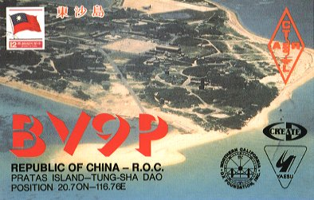
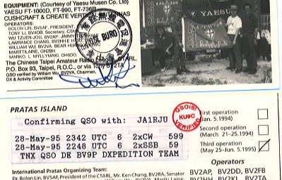

BV9P・Pratas
3度目の運用となった1995年5月のBV9P(Pratas I)のQSL。この年に50MHzの運用が行われた。
日本からはJH1KRC、JH4RHFの両氏が参加(QSLの中の２人で写っている写真)。


1994年3月に行われたBV9PのQSL。 BVからBuro経由で発行されたQSLは、ログ管理に問題
があったとの理由で、QSLマネジャーのKU9Cから発行されたQSLだけがDXCCに有効となった
(KU9Cの赤のスタンプが押されているもの)。4回目の1998年11月の運用では、マネジャーの
KU9Cもメンバーで参加。予定していたOH2BHは直前でキャンセル。日本からJA1BKが参加。
[Pratas Islandの運用記録]
BV9P
First operation (Jan.5.1994)
Second operation (March 21-25.1994)
Operators
BV2AP.BV2HH.BV2VA.BV2WC.BV4AS.BV4OB
BV4TC.BV5AF.OH2BH.OH6DO
Third operation (May 25-Jun.5.1995)
Operators
BV2AP.BV2DD.BV2FB.BV2HH.BV2KI.BV2TA
BV2VA.BV4AS.BV4FH.BV4ME.BV4OB.BV4QA
BV5AF.BV7BK.JH1KRC.JH4RHF.N7NG.OH2BH
OH6DO
BQ9P
Fourth operation (Nov.12-19.1998)
Operators
BV2KI.BV2KS.BV2BA.BV4AS.BV4FH.BV4ME
BV4QA.BV7FC.JA1BK.KU9C.XE1CI.*OH2BH